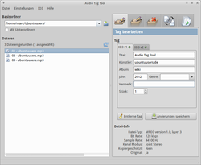

Audio Tag Tool
Dieser Artikel wurde für die folgenden Ubuntu-Versionen getestet:
Ubuntu 16.04 Xenial Xerus
Ubuntu 14.04 Trusty Tahr
Zum Verständnis dieses Artikels sind folgende Seiten hilfreich:
Audio Tag Tool  ist ein Programm zur Verwaltung von ID3-Tags in MP3- und Ogg-Vorbis-Dateien. Tag Tool kann verwendet werden, um einzelne oder viele Tracks umzubenennen.
ist ein Programm zur Verwaltung von ID3-Tags in MP3- und Ogg-Vorbis-Dateien. Tag Tool kann verwendet werden, um einzelne oder viele Tracks umzubenennen.
TagTool kann:
Tags editieren
Tags löschen
Verschieben/Umbenennen mehrerer Dateien und
Wiedergabelisten erstellen
Installation¶
 Folgendes Paket muss installiert [1] werden:
Folgendes Paket muss installiert [1] werden:
tagtool (universe)
 mit apturl
mit apturl
Paketliste zum Kopieren:
sudo apt-get install tagtool
sudo aptitude install tagtool
Benutzung¶
Bei Ubuntu-Varianten mit einem Anwendungsmenü kann das Programm über den Eintrag "Multimedia -> Audio Tag Tool" gestartet werden [2].
Das Programmfenster ist in zwei Abschnitte aufgeteilt. In der linken Spalte wählt man zuerst den Basisordner aus - hierzu anwählen und zum gewünschten Ordner navigieren. Sofern die Unterordner mit eingeschlossen werden sollen, ist die entsprechende Option anzuwählen. Im unteren Abschnitt sind die verfügbaren Audiodateien zu sehen. Es können einzelne oder mehrere Dateien angewählt werden. Im rechten Abschnitt findet man eine Reihe von Registerkarten. Jede Registerkarte entspricht einer der wichtigsten Operationen, welche Audio Tag Tool beherrscht:

| Registerkarten | |
| Reiter | Inhalt |
| Einzelnes Tag bearbeiten | |
| Tags diverser Dateien bearbeiten | |
| Löschen der ID3-Tags (V1 und V2) von einzelnen oder ausgewählten Dateien | |
| Datei(en) umbenennen - hierzu wird der Inhalt des ID3-Tags genutzt | |
| Erstellen einer Wiedergabeliste mit den ausgewählten Dateien | |
Die Anwendung der einzelnen Reiter ist logisch aufgebaut und bedarf keiner weiteren Erläuterung.
Konfiguration¶
ID3¶
Unter "Einstellungen -> ID3-Einstellungen" gibt es die Möglichkeit, die Grundeinstellungen für die ID3-Tags zu verändern.
Zeichen¶
Beim Menüpunkt "Einstellungen -> Zeichenkonvertierung" kann eingestellt werden, ob Leerzeichen beim Taggen bzw. beim Umbenennen verändert werden oder die Groß- bzw. Kleinschreibung angewendet werden soll.
Problembehebung¶
Wechselt man im laufenden Betrieb in den Vollbildmodus, so ist das Programm mit der Maus nicht mehr zu steuern. Links- wie Rechtsklick führen dazu, dass das Programmfenster vom Betrieb mit in den Betrieb ohne Titelleiste springt. Alle Symbole und Menüeinträge verschieben sich dadurch um bis zu 1 cm auf dem Bildschirm, kein Element kann wirklich getroffen und ausgelöst werden.
Abhilfe: Audio Tag Tool über die Tastatursteuerung mit "Datei -> Beenden" oder mit dem Befehl killall tagtool im Terminal beenden - die XML-Konfigurations-Datei ~/.tagtoolRC löschen, Tag Tool neu starten.
Außerdem bereitete das Programm früher Probleme bei der Darstellung von UTF8-kodierten Texten in Tags. Ob dieses Problem inzwischen repariert wurde, ist nicht bekannt.
 - Blogbeitrag, 03/2012
- Blogbeitrag, 03/2012 weitere Programme
weitere Programme- Erstellt mit Inyoka
-
 2004 – 2017 ubuntuusers.de • Einige Rechte vorbehalten
2004 – 2017 ubuntuusers.de • Einige Rechte vorbehalten
Lizenz • Kontakt • Datenschutz • Impressum • Serverstatus -
Serverhousing gespendet von